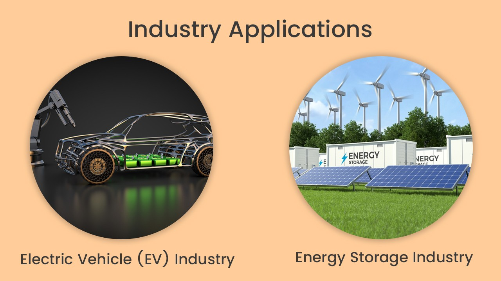
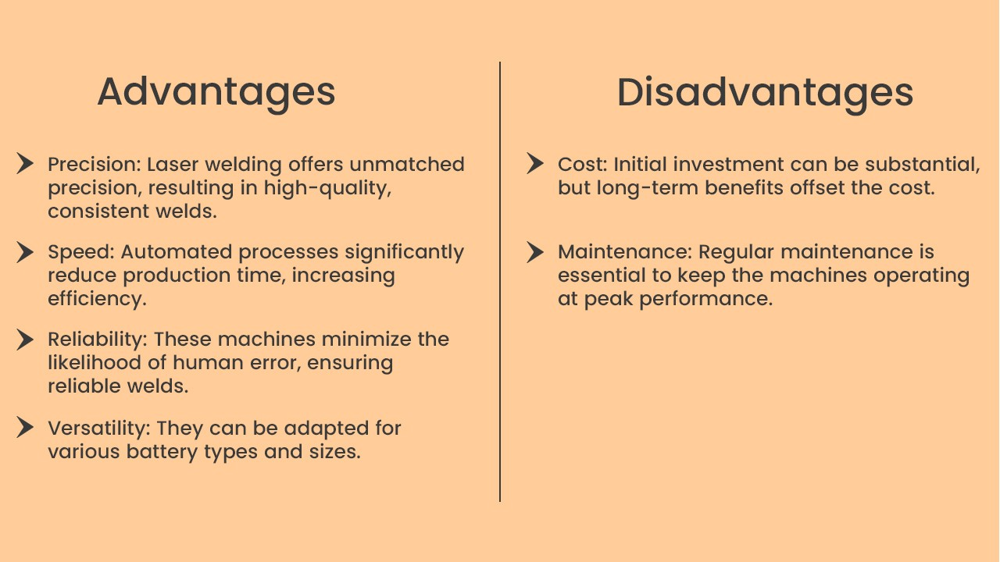
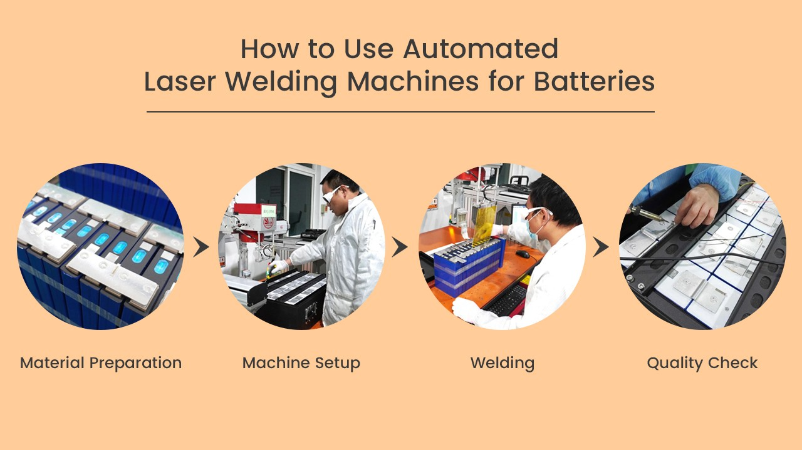
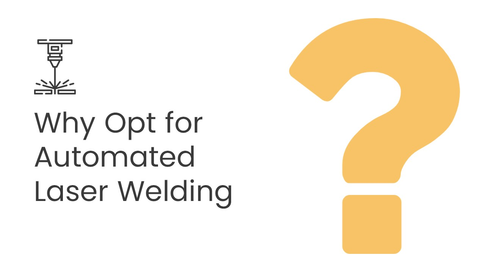
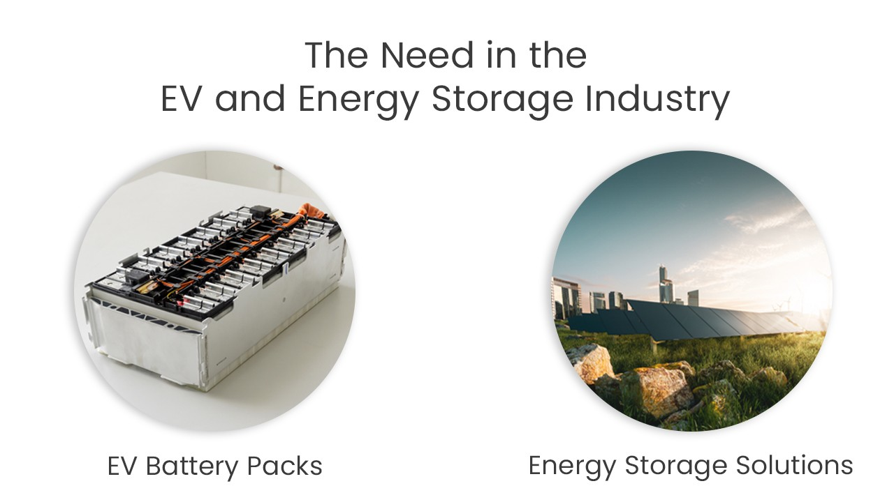

I. Introduction to Automated Laser Welding Machines for Batteries
Automated laser welding machines for batteries are at the forefront of modern manufacturing. These cutting-edge machines have revolutionized the welding process, enabling precision, speed, and reliability in battery assembly. Let's delve into the industry aspects of these remarkable tools.
II. Industry Applications
Powering the Future with Laser Precision:

1. Electric Vehicle (EV) Industry: The EV sector relies heavily on automated laser welding machines for battery pack assembly. These machines ensure the integrity and safety of high-capacity lithium-ion battery packs that power electric cars.
2. Energy Storage Industry: In the energy storage sector, these machines are indispensable for creating robust battery modules used in renewable energy solutions, ensuring the efficient storage of green energy.
III. Advantages and Disadvantages
The Pros and Cons of Automated Laser Welding Machines:

Advantages:
Precision: Laser welding offers unmatched precision, resulting in high-quality, consistent welds.
Speed: Automated processes significantly reduce production time, increasing efficiency.
Reliability: These machines minimize the likelihood of human error, ensuring reliable welds.
Versatility: They can be adapted for various battery types and sizes.
Disadvantages:
Cost: Initial investment can be substantial, but long-term benefits offset the cost.
Maintenance: Regular maintenance is essential to keep the machines operating at peak performance.
IV. How to Use Automated Laser Welding Machines for Batteries
Operating these machines involves the following steps:

Material Preparation: Ensure the battery components are clean and properly aligned.
Machine Setup: Configure laser parameters such as power, pulse duration, and focal point.
Welding: Activate the machine to perform automated laser welding, creating precise welds.
Quality Check: Inspect welds for quality, ensuring they meet industry standards.
V. Customization
Automation in laser welding machines allows for flexibility and customization:
Parameter Adjustment: Tailor laser settings for specific materials and applications.
Integration: Seamlessly integrate the machine into automated production lines for maximum efficiency.
Software Enhancements: Customize the control software to meet your unique requirements.
VI. What Makes It Different?
Why Opt for Automated Laser Welding:

High Productivity: These machines offer unparalleled productivity and repeatability.
Reduced Labor Costs: Automation decreases the need for manual labor.
Quality Assurance: Automated processes minimize the risk of defects.
VII. The Need in the EV and Energy Storage Industry
Automated laser welding machines are indispensable in these burgeoning industries:

EV Battery Packs: They ensure the safety and reliability of lithium-ion battery packs, a core component of electric vehicles.
Energy Storage Solutions: These machines contribute to the efficient storage and distribution of renewable energy, fostering sustainability.
VIII. Conclusion
Automation in laser welding machines for batteries is transforming the manufacturing landscape. Its precision, speed, and reliability are pivotal in the growth of the EV and energy storage sectors. As we march towards a sustainable future, these machines will continue to play a central role in creating high-quality battery systems.
Thank you for joining us on this journey into the world of automated laser welding for batteries. Should you have any questions or wish to explore this technology further, please don't hesitate to reach out to us.